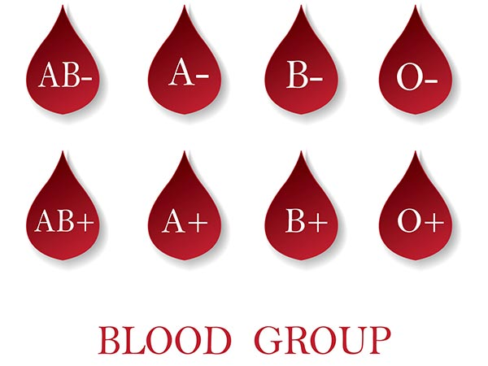

Demand for different blood types
We maintain a regular supply of all blood types to ensure the right blood is available to everyone who needs it. We need enough of the right types of blood to meet day-to-day patient needs and to cope with emergencies.
Which blood types are in demand?
Some blood types are in higher demand from hospitals than others.
For example, it's estimated that around 8% of people have O negative blood, but O negative makes up 13% of requests from hospitals.
This is because anyone can receive the red cells from O negative donors. So O negative red cells can be used in emergencies or when a person's blood type in unknown.
Sometimes we need to target specific blood types to increase stock levels. That's why we sometimes contact regular donors with the particular blood type we need, and ask them to give blood.
The 8 main blood types
Find out more about your blood type

O positive
- O positive blood is the most common blood type, characterized by the presence of A and B antigens and absence of the Rh factor. Individuals with O positive blood are universal donors for Rh-positive blood, making their blood in high demand for transfusions. It's vital for maintaining blood supply levels in medical emergencies.
O Negative
- O negative blood is the universal donor type, lacking A, B antigens, and the Rh factor. Individuals with O negative blood can donate to anyone, making their blood crucial in emergencies when the recipient's blood type is unknown. Its scarcity makes it highly sought after for transfusions, particularly in life-threatening situations.
A positive
- A positive blood type is the second most common, with both A antigens and the Rh factor present on red blood cells. People with A positive blood can donate to those with A and AB blood types. They are often referred to as universal plasma donors, crucial for medical treatments and transfusions.
A Negative
- A negative blood type lacks the Rh factor but contains A antigens. Individuals with A negative blood can donate to those with A and AB negative blood types. Their donations play a critical role in medical emergencies, providing compatible blood for transfusions and treatments.
B positive
- B positive blood type contains B antigens and the Rh factor, making it the third most common blood type. Individuals with B positive blood can donate to those with B and AB blood types. Their donations are crucial for replenishing blood supplies and treating patients in need of transfusions.
B Negative
- B negative blood type lacks the Rh factor but contains B antigens. It's rarer than B positive blood. B negative individuals can donate to those with B and AB blood types but are universal recipients for Rh-negative blood. Their donations are essential for maintaining adequate blood supplies and treating patients in need of transfusions.
AB positive
- AB positive blood type is the rarest, containing both A and B antigens along with the Rh factor. Individuals with AB positive blood are universal recipients, able to receive blood from any blood type. Their blood is valuable for plasma donations, contributing to medical treatments and transfusions for various patients.
AB Negative
- AB negative blood is a rare blood type, containing both A and B antigens but lacking the Rh factor. Individuals with AB negative blood can receive blood from any Rh-negative donor. Their blood is crucial for emergency transfusions and medical treatments, particularly for patients with rare blood types.
Which blood types are rare?
A rare blood type is any blood type that is needed by patients and is difficult to find in the population.
Why is closely-matched blood important?
Some patients, particularly those who require ongoing transfusions, need blood that closely matches their blood type.
This involves matching blood more extensively than the main blood types.
Some rare subtypes are more common in specific communities, which is why we particularly need more blood donors from Black, Asian and minority ethnic communities.
How long does blood last after it’s been donated?
Blood components have a limited shelf life:
red blood cells can be stored for up to 35 days
platelets can be stored for up to 7 days
plasma can be stored for up to 3 years